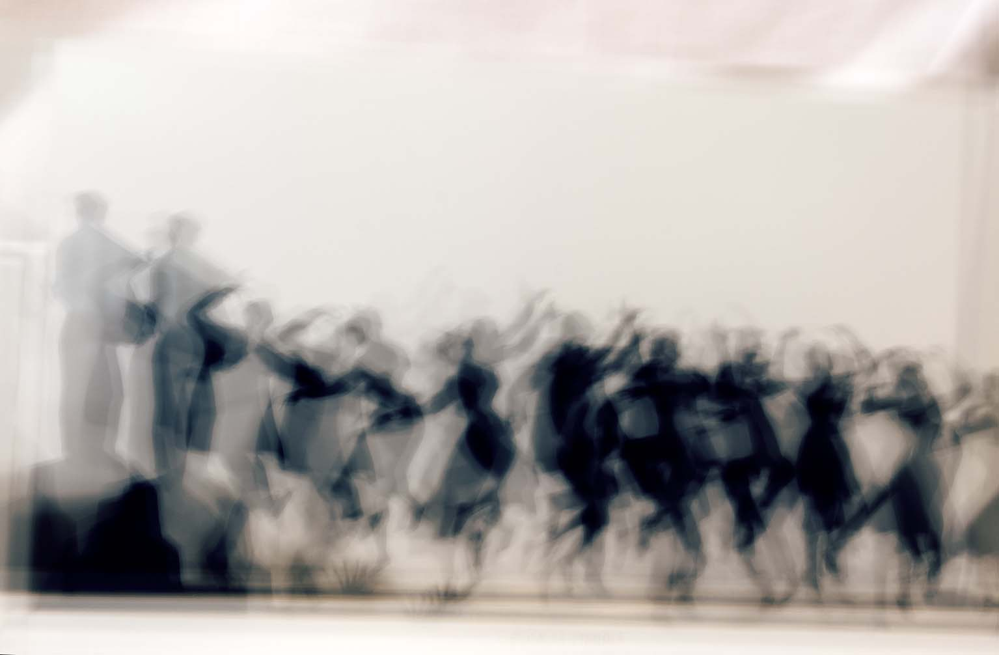

Querida Elsa:
Hoy no estás aquí por casualidad, aunque seguro que durante los últimos tres días has sospechado de todo el mundo porque nos conoces demasiado bien. Pero resulta que Pedro, Laura, tus amigos, tus amigas y este ejército de conspiradores que tienes por entorno nos hemos puesto de acuerdo para cometer una ilegalidad: hacerte una fiesta sorpresa y obligarte a encajar, por una vez en la vida, el protagonismo que siempre les cedes a los demás.
Cumples 65 años. Y lo haces, además, firmando la rendición incondicional de tu vida laboral. Te jubilas. Se dice pronto, pero quienes te conocemos bien sabemos que dedicarse a la sanidad pública durante décadas no es un trabajo: es una trinchera, un sacerdocio laico y una prueba de resistencia para la que no hay entrenamiento previo. Ha habido guardias interminables, turnos de noche de los que regresabas con cara de haber visto el fin del mundo y esa habilidad casi milagrosa para colgar el uniforme en la puerta y dar la cara por los tuyos en cuanto cruzabas el umbral.
Porque para quienes te rodean no eres solo la profesional impecable que resolvía emergencias entre pasillos de linóleo y luces fluorescentes. Para todos nosotros eres esa fuerza de la naturaleza capaz de adivinar un problema a kilómetros de distancia, de curar cualquier mal momento con un gesto acogedor y de mantener el tipo cuando la vida se ponía cuesta arriba. A veces cometemos el error egoísta de dar por sentado que las personas como tú son eternas, indestructibles y que vienen de fábrica con un tanque infinito de paciencia. Hoy, mirando atrás, nos damos cuenta del esfuerzo monumental que había detrás de cada uno de tus gestos.
Pedro ha tenido que aguantar tus nervios, tus listas de tareas y tu obsesión por tenerlo todo bajo control. Laura y el resto de la tribu han tenido que aprender a compartirte con un trabajo que se llevaba tus mejores horas y mucha de tu energía. Pero hoy la sanidad pierde a una de sus mejores piezas y todos los que te queremos ganamos la batalla definitiva: te recuperamos a tiempo completo.
A partir de mañana se acabaron los madrugones de infarto, los horarios imposibles y los problemas ajenos a deshoras. Te toca aprender el arte —que seguro te va a costar un poco— de no hacer nada sin sentir culpa. Te toca pasear, tomarte el café frío solo si te da la gana, viajar, discutir con la televisión y dejar que seamos nosotros los que nos preocupemos por ti.
Que les den por un tiempo a las urgencias. Hoy la única urgencia real es brindar por ti, por tus 65 años, por la mujer libre y valiente que eres y por todo el camino hermoso que te queda por delante.
Feliz jubilación, Elsa. Te lo has ganado a pulso. Gracias por todo.